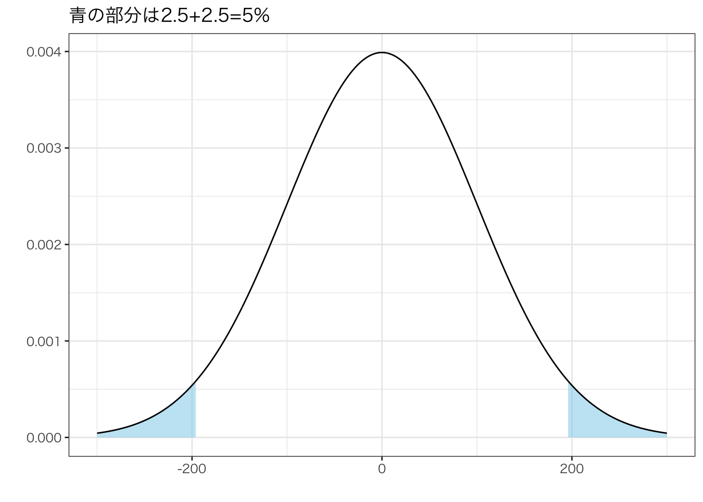
10/統計的仮説検定：実習編
概要
（R実習回）統計的仮説検定について、これまで学んだことをふりかえるとともに、自分でR上の分析結果を仮説検定の枠組みを用いて解釈してみる。
準備学習
実習の進行と到達目標
今回の実習ではスライドではなくこちらのファイルに沿って行う。到達目標は以下の通り。
ノート到達目標
WebClass上の出席登録も忘れずに！
本日の授業の位置付け
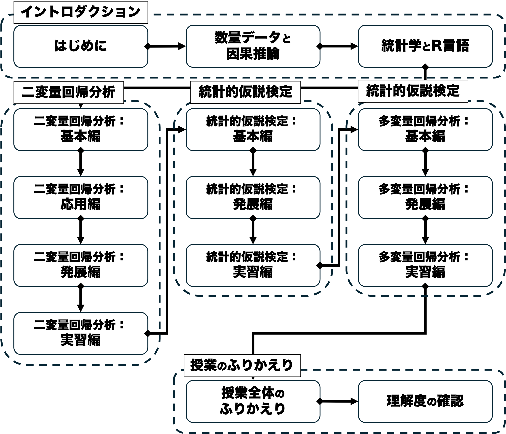
小テストの講評
TBD
実習の準備
Posit Cloudの準備
Posit Cloudにログインし、前回のWorkspace（例えば「ICPA2」）に入ったら、以下の準備を行おう。
- セッションのリスタート：最上部ツールバーのSession>Restart R
- オブジェクトのクリア：右上Environmentの🧹をクリック
- コンソールのクリア：Consoleペーン右上の🧹をクリック（色が見づらいが🔍の隣にある）
- 新しいスクリプトの作成と保存：ツールバーFile直下のアイコンからR Script
- 「10_testexc.R」などの名前をつけて保存
データのインポート
次に今回の実習で使うドーナツデータ（donuts.RDS）をダウンロードしインポートする
- WebClassにアクセスし「第7回R実習データ（ドーナツ）」からデータをダウンロード
- PositCloud上にアップロードした上で
dta <- readRDS("donuts.RDS")を実行しインポート1
統計的仮説検定の復習
統計的仮説検定の手順
身長が高いほど賃金は上がるのだろうか。100人の日本人のデータを使ってモデル\(賃金_{i}=\beta_{0}+\beta_{1}身長_{i}+\varepsilon_{i}\)を推定したところ、\(\hat{\beta}_{1}=220\)で標準誤差は\(100\)と推定された。この結果から果たして身長が高くなるほど賃金も上がると結論づけてよいだろうか。判別するための枠組みが統計的仮説検定である。統計的仮説検定は以下の手順で行う。
- まず、帰無仮説を定める。今回は「身長は賃金に影響を与えない」、つまり\(H_{0}:\beta_{1}=0\)であるとする。
- 次に、対立仮説を定める。今回は「身長は賃金に（正であれ負であれ）なんらかの影響を与える」、つまり\(H_{1}:\beta_{1}\ne0\)であるとする。2
- 最後に帰無仮説が正しいとした場合に推定結果\(\hat{\beta}_1=220\)がどれくらいの確率で出やすいかを評価する。
- もし確率が低いのであれば帰無仮説が正しくなさそうだとして棄却することになり、日本人全体では\(H_{1}:\beta_{1}\ne0\)、つまり身長は賃金に影響を与えていることになる。
- もし確率が高いのであれば帰無仮説は棄却できず、\(H_{0}:\beta_{1}=0\)、つまり身長は賃金に影響を与えないということになる。
この身長と賃金の例で考えると、帰無仮説が正しい場合\(\hat{\beta}_{1}\)は期待値0、標準偏差100の正規分布にしたがう。下の図の青の網掛けはこの分布で196以上あるいは196以下の値が出る確率を表し、合わせて5%である。これを有意水準とし、220という値がどれほど珍しいのかを考えてみよう。下の図の赤の網掛けの部分の面積は220以上あるいは-220以下の値が出る確率で\(p\)値といい、計算すると2.6%程度である。p値は有意水準を下回っているため、220という値は帰無仮説が正しいという前提では稀にしか出てこない値だといえる。したがって帰無仮説は棄却され、\(\hat{\beta}_1=220\)という推定結果は有意であると言える。
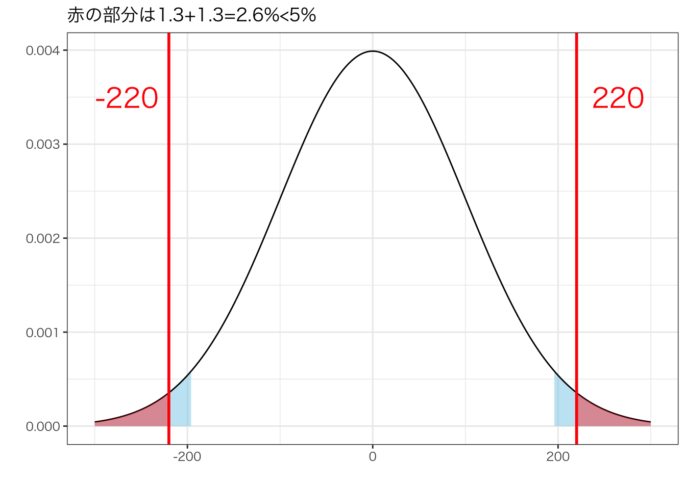
\(t\)検定
以上は係数\(\hat{\beta}_{1}\)そのものを見て、正規分布上で検定することを考えたが、実際のOLSの検定は\(t\)検定を行うことが圧倒的に多い。係数を標準誤差で割った値\(\hat{\beta}_{1}/\operatorname{se}(\hat{\beta}_{1})\)を\(t\)値といい、\(t\)分布にしたがう。\(t\)分布は自由度（\(n-k\)3）によって形が変わり、自由度が小さいうちは裾が厚いが自由度が大きくなるにつれて標準正規分布4に近づく。サンプルサイズが大体100くらいあれば標準正規分布上の検定と同じように考えられる。
\(t\)検定を使うメリットはその分かりやすさにある。期待値0の正規分布のもとで220という値の珍しさは標準誤差によって変わり、標準誤差が大きい場合よりも小さい場合のほうが珍しいと言える。標準誤差で割ることでこうした点を差し引くのである。結果サンプルサイズが大きい場合これだけの\(t\)値があれば有意であるという臨界値も共通のものが出てくることになり、5%水準であればt値の絶対値が1.96よりも大きければ有意であると言える。身長と賃金の例でいえば\(t\)値は\(220/100=2.2>1.96\)なので、この点からも推定結果は統計的に有意である。
信頼区間
ここまでOLS推定の係数が有意か有意でないを考えてきたが、それでは実際に真の値はどのあたりにありそうなのか。その手がかりになるのが信頼区間である。信頼区間は一般に\(\hat\beta_{1} \pm \operatorname{t臨界値}\times \operatorname{se}(\hat\beta_{1})\)で計算でき、95%水準なら\(\hat\beta_{1} \pm 1.96\times \operatorname{se}(\hat\beta_{1})\)である。身長の係数で計算すると\(220\pm1.96\times100\)で、は\([24, 416]\)が95%信頼区間である。この結果から分析結果を解釈すると、真の値は24から416あたりに位置していると考えればこの結果は無理がない、ということになる。5ちなみにこの区間は0を跨いでいないが、これは5%水準で統計的に有意であることと密接に関係する。一般に有意水準を\(\alpha\)とした時、\(100\times(1-\alpha)\)%水準の信頼区間が0を跨いでいなければその係数は統計的に有意で、跨いでいなかったら有意でないと判断できる。
確率密度関数
確率密度関数
今まで正規分布などの確率分布を扱い、以下のようなグラフがよく出てきた。実はこのグラフは確率密度関数というものを図示したものである。横軸がその確率変数の値であり、縦軸は確率密度を表す。
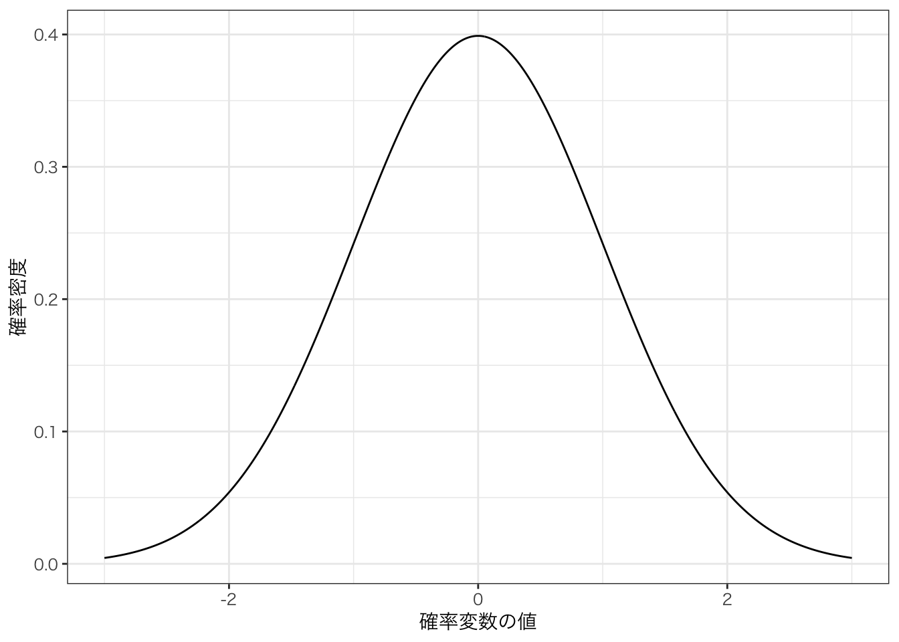
縦軸の確率密度は対応する値の出やすさを表してはいるが、確率そのものではないことに注意が必要である。なぜなら確率密度関数は連続変数に対して定義されるものだからである。例えば連続変数の典型例として身長を考えてみよう。身長が取りうる範囲は0cmから理論上は上限がなく、そのなかのどんな細かい値をも取りうる。鈴木の身長が167cmだとして、この範囲のなかで167cmドンピシャになる確率は0である（無限にある範囲に対してただ1点だから）。同じ理由で上記の正規分布上で例えば1.5がドンピシャで出る確率もまた0である。
それでは連続変数の確率はどのように定義されるのか。それは1.2以上2.3以下などといった範囲に対してである。実は確率密度関数のグラフでは、関数を表す線と横軸の間の面積が確率になり、全体の合計は1である。横軸で一定の範囲を定めた上でその部分の面積がその値の範囲が出る確率になる。下の図では標準正規分布で特定の範囲が出る確率（＝面積）を示している。
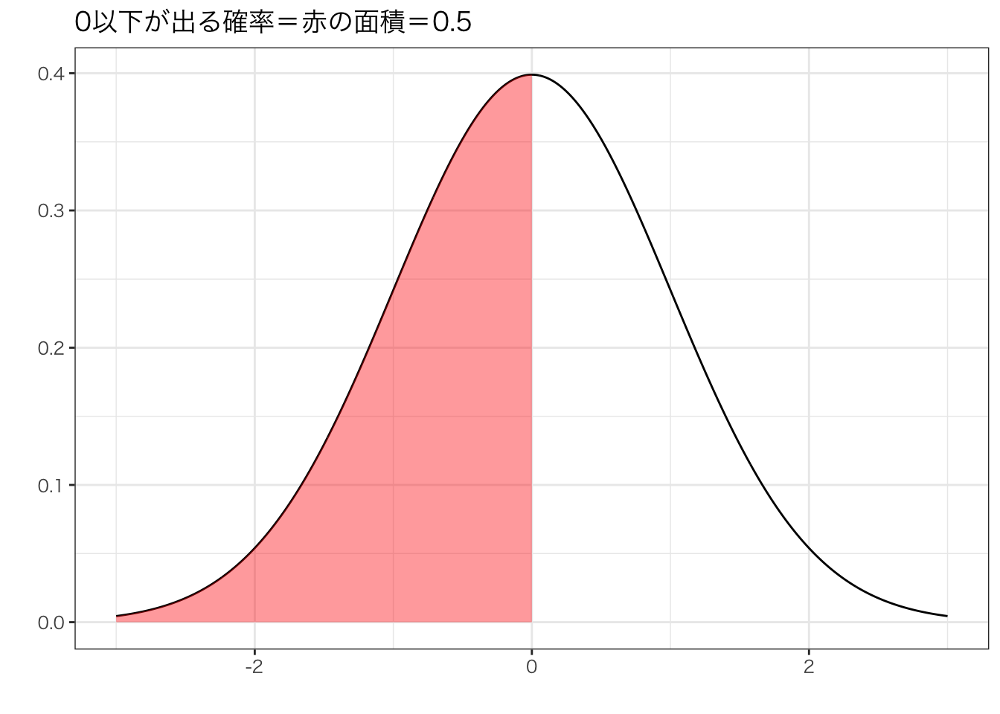
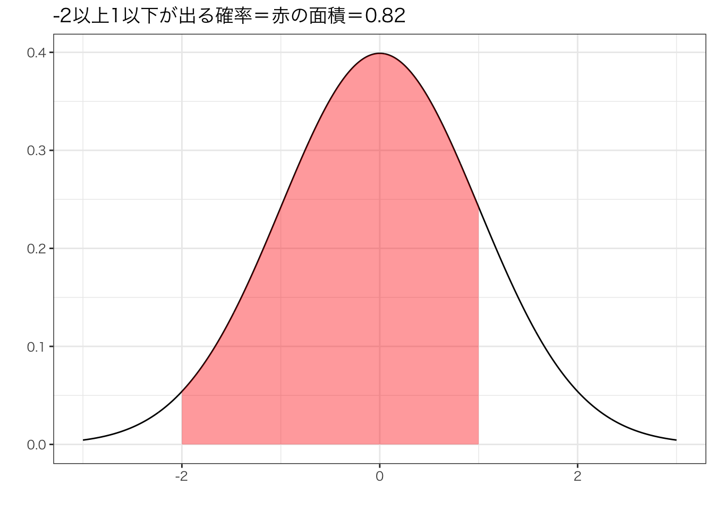
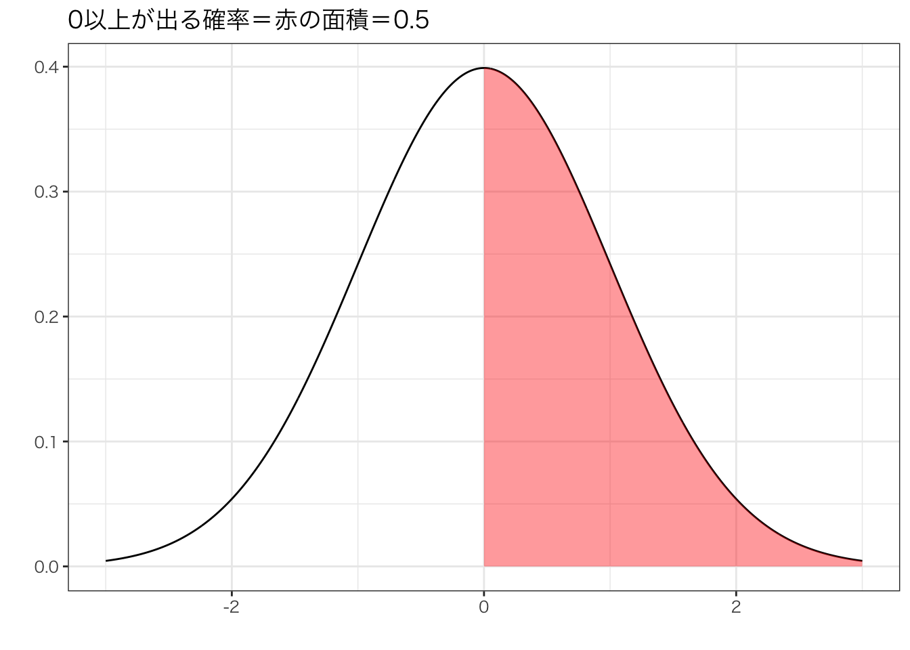
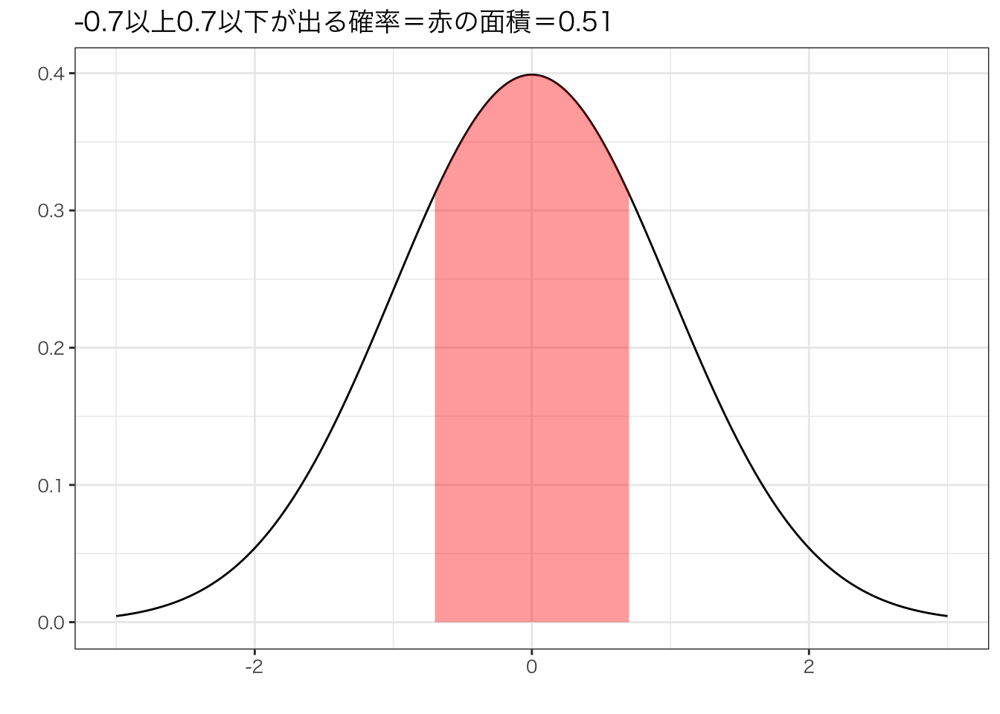
R上での確率計算
pnorm()関数
Rで正規分布上の特定の範囲が出る確率はpnorm()関数を使って計算できる。例えば期待値0、標準偏差1の正規分布上で上のグラフの範囲を計算するには以下のコマンドを実行する。
# 0.5以下が出る確率
pnorm(0.5, mean = 0, sd = 1)[1] 0.6914625# -2以上1以下が出る確率
pnorm(1, mean = 0, sd = 1) - pnorm(-2, mean = 0, sd = 1)[1] 0.8185946# 0.5以下が出る確率
1 - pnorm(0.5, mean = 0, sd = 1)[1] 0.3085375# -2以上1以下が出る確率
pnorm(1, mean = 0, sd = 1) - pnorm(-2, mean = 0, sd = 1)[1] 0.8185946ここでpnorm()関数の使い方に注意。この関数は第一引数に入力された値以下の範囲を計算してくれるが、単体ではそれ以上のことはできない。pnorm(1, mean = 0, sd = 1)を実行すれば、標準正規分布上で１以下の値が出る確率が、pnorm(-0.5, mean = 0, sd = 1)とすれば-0.5以下の値が出る確率がそれぞれ計算されるが、それで終わりである（下図の通り）。上記のコマンドのとおり、1以上を計算したい場合は1 - pnorm(1, mean = 0, sd = 1))、-0.5以上1以下を計算したい場合はpnorm(1, mean = 0, sd = 1)) - pnorm(-0.5, mean = 0, sd = 1)とする。
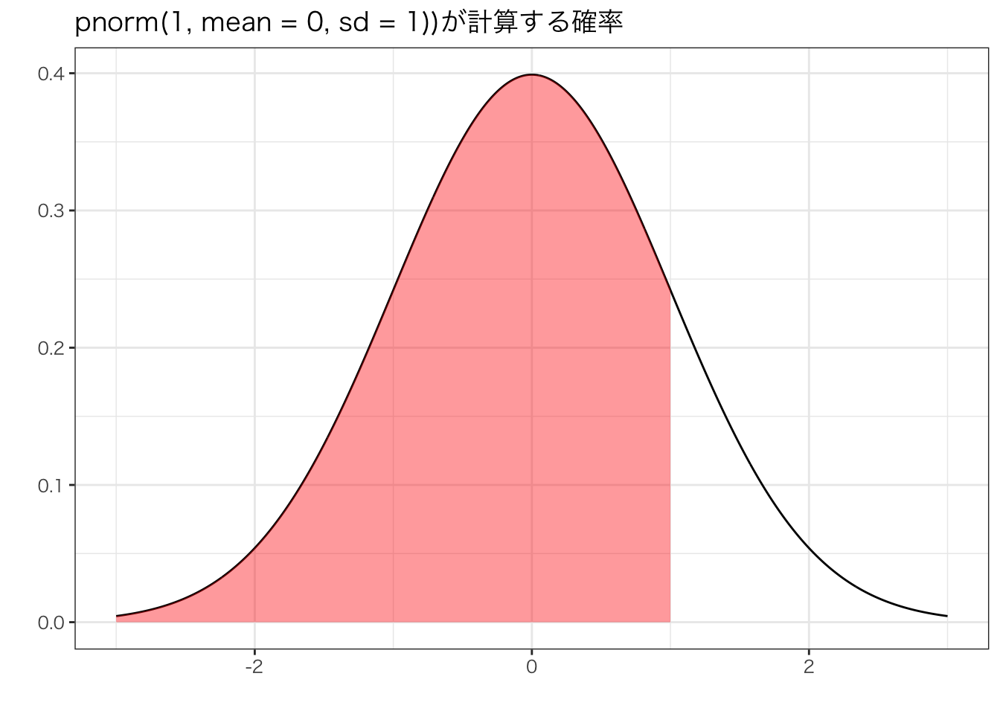
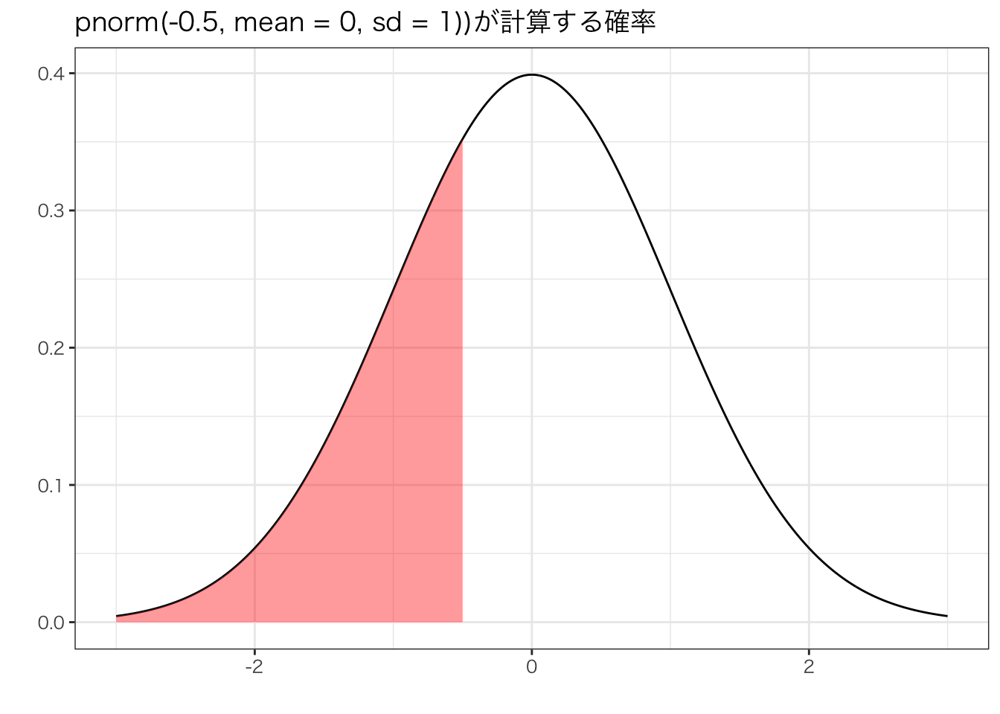
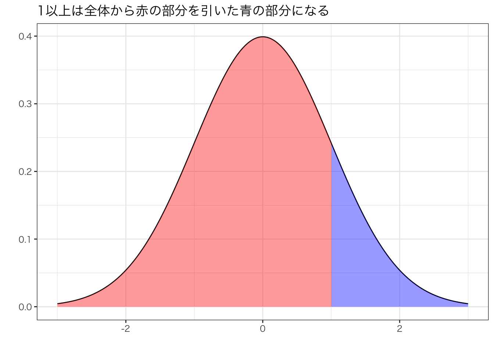
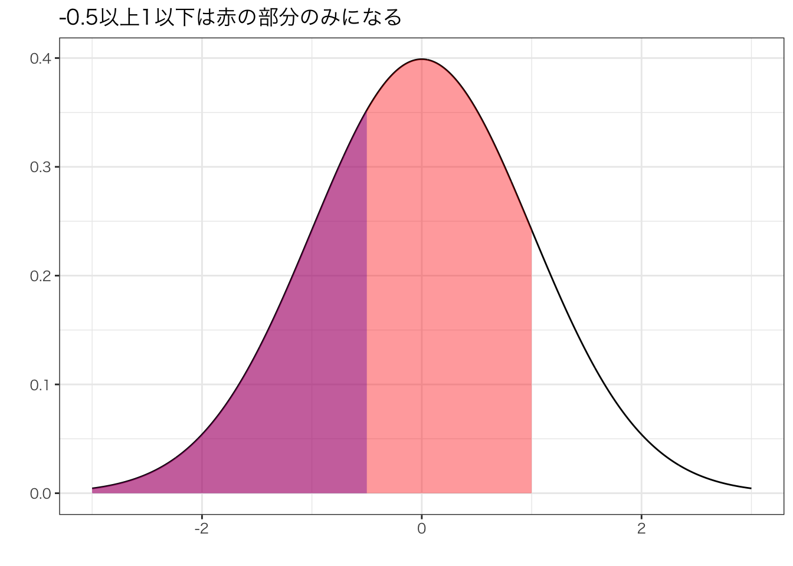
qnorm()関数
pnorm()関数を逆の操作をしてくれるのがqnorm()関数である。例えば標準正規分布で1以下の値が出る確率は0.84で、pnorm(1, mean = 0, sd = 1)で計算できる。反対に、どの値以下なら0.84の確率で出るか、という計算をしてくれるのがqnorm()である。以下のコマンドでは標準正規分布上でそれぞれ0.05、0.1、0.6、0.75、0.9の確率を出す値の範囲の上限が計算される。
## 0.05（下位5%）
qnorm(0.05, mean = 0, sd = 1)[1] -1.644854## 0.1（下位10%）
qnorm(0.1, mean = 0, sd = 1)[1] -1.281552## 0.6（下位60%）
qnorm(0.6, mean = 0, sd = 1)[1] 0.2533471## 0.75（下位75%）
qnorm(0.75, mean = 0, sd = 1)[1] 0.6744898## 0.9（下位90%）
qnorm(0.9, mean = 0, sd = 1)[1] 1.281552上記のコマンドの計算を図示すると以下のようになる。-1.65以下の値が出る確率が5％、0.25以下の値が出る確率が60%、1.28以下の値が出る確率が90%といった具合である。
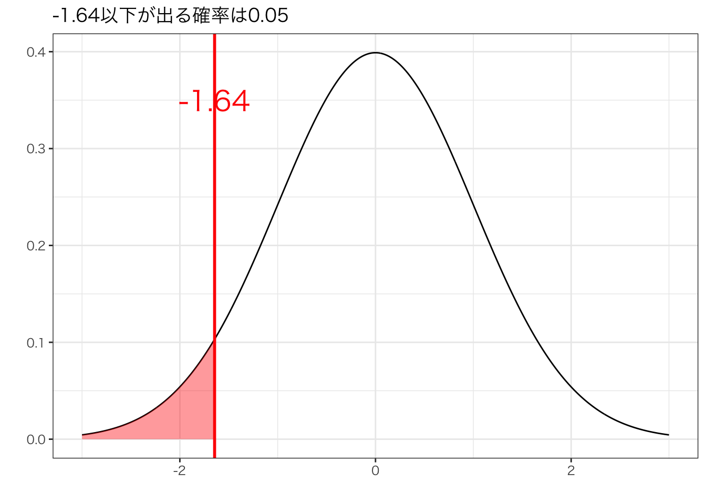
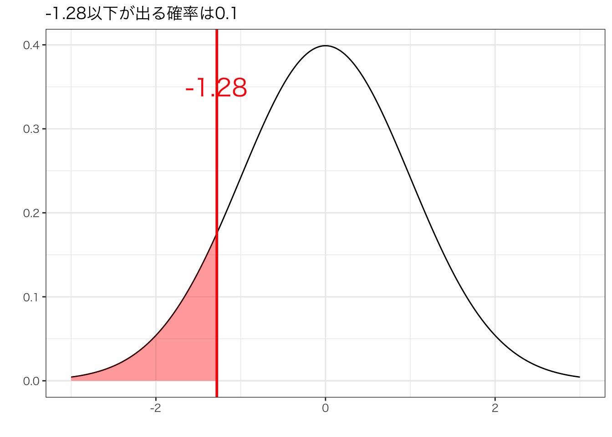
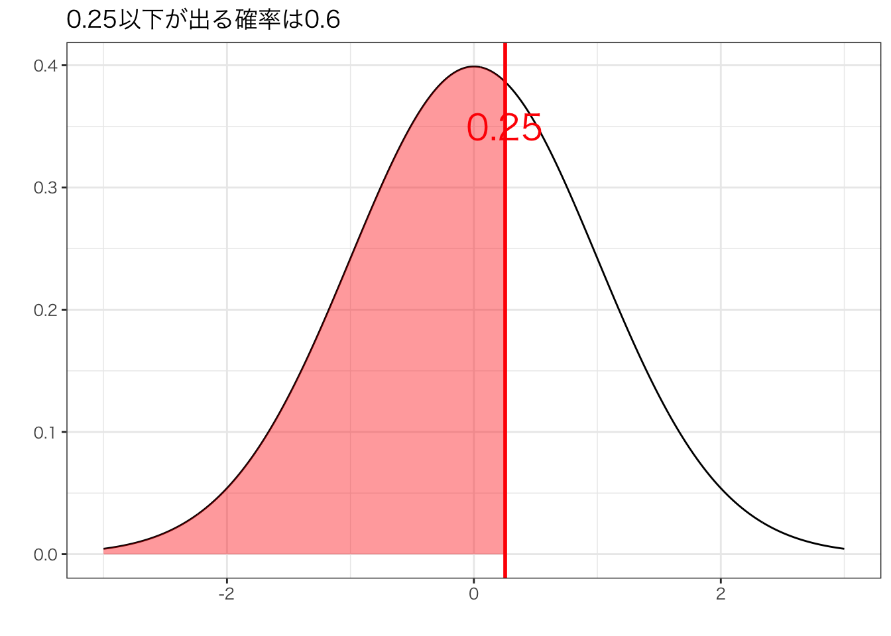
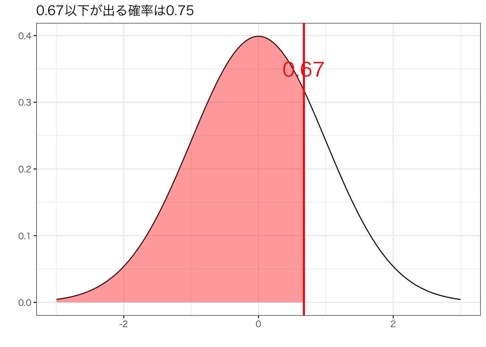
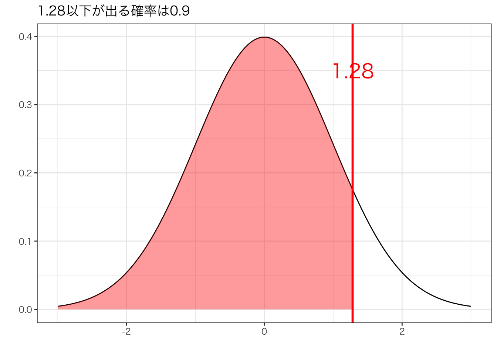
\(t\)分布での計算
t分布上で上記のpnorm()およびqnorm()に対応するのはそれぞれpt()およびqt()である。自由度100のt分布上において1以下の値が出る確率と、下位45%の範囲の上限となる値を計算するには以下のコマンドを実行する。
# 1以下の値が出る確率
pt(1, df = 100)[1] 0.8401379# 下位45%の範囲の上限となる値
qt(0.45, df = 100)[1] -0.1259809\(p\)値と信頼区間
R上でのOLS実装と仮説検定
第7回の実習で使ったドーナツのデータを再度分析してみよう。（データのインポートはすでに行なっているが）以下のコマンドを実行すればデータのインポートからOLSの推定までを行える。
dta <- readRDS("donuts.RDS")
OLSresult <- lm(weight ~ donuts, data = dta)OLSresultオブジェクトにOLSの推定結果はすでに保存されているが、summary関数を使うとその詳細を見ることができる。
summary(OLSresult)
Call:
lm(formula = weight ~ donuts, data = dta)
Residuals:
Min 1Q Median 3Q Max
-42.238 -4.299 0.343 15.922 24.976
Coefficients:
Estimate Std. Error t value Pr(>|t|)
(Intercept) 55.6080 7.4200 7.494 1.21e-05 ***
donuts 4.1287 0.8707 4.742 0.000608 ***
---
Signif. codes: 0 '***' 0.001 '**' 0.01 '*' 0.05 '.' 0.1 ' ' 1
Residual standard error: 20.68 on 11 degrees of freedom
Multiple R-squared: 0.6715, Adjusted R-squared: 0.6416
F-statistic: 22.48 on 1 and 11 DF, p-value: 0.0006078繰り返しになるが、上記で注目すべきはまずCoefficietsの欄である。
Estimateはそれぞれ切片(intercept)とdonutsの傾きを表している。(intercept)が55.6ということは、ドーナツを全く食べていない場合の平均体重は55.6キロ程度ということである。donutsの傾きは4.13だが、これはドーナツを週一個多く食べるごとに体重が4.13キロ増えることを意味する。Std. Errorでは切片および傾きの標準誤差が表示されている。donutsの標準誤差を見ると0.87程度だが、これが傾きの推定値のばらつきを表している。t valueは\(t\)値であり、係数Estimateを標準誤差Std. Errorで割ったものである。donutsを見ると4.742になっているが、これは\(4.1287/0.8707\)を計算すれば出てくる（切片(intercept)も同様）。Pr(>|t|)が係数の\(p\)値である。上記のとおりdonutsの\(t\)値は4.742であるが、この係数が\(t\)分布上でどれくらい珍しいかがこれで評価できる。\(p\)値は0.000608なので、5%（0.05）を遥かに下回っているため有意である。Pr(>|t|)にある星***は有意水準を表す。下のSignif. codesに凡例が書いてあるが、星三つは***は0.001、つまり0.1%水準での有意性を表している。つまりこの推定された係数の帰無仮説は有意水準0.1%で棄却されたということであり、ドーナツが体重に何らかの影響を与えることがかなりの確信を持って言える、ということに他ならない。星が多いほど、より厳しい有意水準でも帰無仮説を棄却できることを意味する。ただし、星が多いからといって、効果が大きい、あるいは研究上重要であるとは限らないのに注意。
t検定をもう少していねいに
以上からドーナツの係数は0.01%水準で有意であることがわかったが、この検定をもう少し詳細に見てみよう。行なっているのは\(t\)検定で、\(t\)値4.742が\(t\)分布上でどれくらいレアかを評価している。ここで\(t\)分布は自由度によって形がかわることは学んだ通りだが、実は上記の分析結果の下から3行目に11 degrees of freedomと記載があり、自由度11であることがわかる。上記の\(p\)値は両側検定で算出されているが、これはすなわち自由度11の\(t\)分布上で4.742以上または-4.742以下の値が出る確率を計算しているのである。
この確率の計算は上記のpt()関数を使えば行うことができる。自由度は11、\(t\)値は4.742なので、以下のコマンドを実行することで分析結果と同じ\(p\)値が計算できるはずだ。
tval <- 4.742 # t値
df <- 11 # 自由度
lower <- pt(-tval, df = df) # -4.742以下が出る確率
upper <- 1 - pt(tval, df = df) # 4.742以上が出る確率
(pval <- lower + upper) # 注：コマンドを()で括ると結果も一緒に出力してくれる[1] 0.0006074774# このコマンドで一括でできる
2 * (1 - pt(abs(tval), df)) # 注: abs()は絶対値を計算する関数[1] 0.0006074774信頼区間
この分析結果から信頼区間を計算してみよう。信頼区間の計算は簡単で、confint()関数でできる。
confint(OLSresult) 2.5 % 97.5 %
(Intercept) 39.276641 71.939334
donuts 2.212227 6.045187donutsを見れば傾きの信頼区間がわかる。2.5%が下限で2.21、97.5%が上限で6.05になっており、信頼区間は\([2.21, 6.05]\)である。
検出力
検出力：復習
検出力とは観察されたデータが誤っている帰無仮説を棄却できる力であり、すなわち第2種の過誤を避けられる確率を意味する。身長と賃金の例で言えば、本当は身長は賃金に影響を与えるにも関わらず与えないと結論づけるのが第2種の過誤であり、この過誤を避けて身長は賃金に影響すると結論づけられる力が検出力である。以下は標準誤差2、真の値が5の時の有意水準5%の片側検定での検出力を計算するコマンドである。ここでは、推定された係数は平均5、標準誤差2の正規分布に従うと仮定している。検出力を計算すると0.8になる。
true <- 5 # 真の値
se <- 2 # 標準誤差
cval <- qnorm(0.95, mean = 0, sd = se) # 片側5%水準の臨界値
power <- 1 - pnorm(cval, mean = true, sd = se) # 検出力検出力に影響する要因の1つが真の値である。一般に真の値が0から離れるほど検出力は高まる。身長が賃金により大きな影響を与えるほど、影響がないと誤って判断される確率は下がる＝影響があると正しく判断される確率は上がるということである。以下、標準誤差1、有意水準5%の片側検定を考えて（臨界値は1.64）、真の値を1から5まで0.1ずつ増やしていったときの検出力を計算し、図示ししている。真値が大きくなるほど検出力は上がっている。
true <- seq(1, 5, by = 0.1) # 真の値
se <- 1 # 標準誤差
cval <- qnorm(0.95, mean = 0, sd = se) # 片側5%水準の臨界値
power <- 1 - pnorm(cval, mean = true, sd = se) # 検出力
plot(true, power)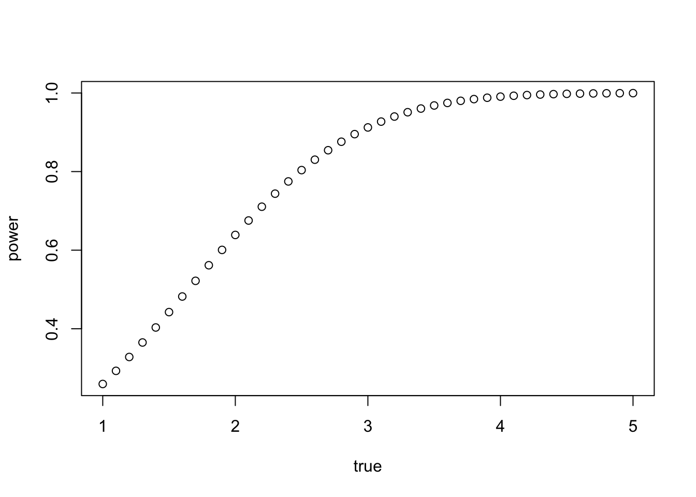
検出力に影響を与えるもう一つの要因が標準誤差である。一般に標準誤差が大きくなると検出力は下がる。標準誤差はサンプルサイズが小さくなるほど大きくなるので、小さいサンプルのデータは検出力が低い。従ってサンプルが小さいときに有意でない結果が出た場合は検出力の低さのためにそうなったのかもしれず、影響がないと判断しない方がよい。以下は標準誤差を1から2にして、上記と同様に検出力を計算・図示するコマンドである。図を比べると一目瞭然で、どんな真の値に対しても検出力が低いことがわかる。
true <- seq(1, 5, by = 0.1) # 真の値
se <- 2 # 標準誤差
cval <- qnorm(0.95, mean = 0, sd = se) # 片側5%水準の臨界値
power <- 1 - pnorm(cval, mean = true, sd = se) # 検出力
plot(true, power)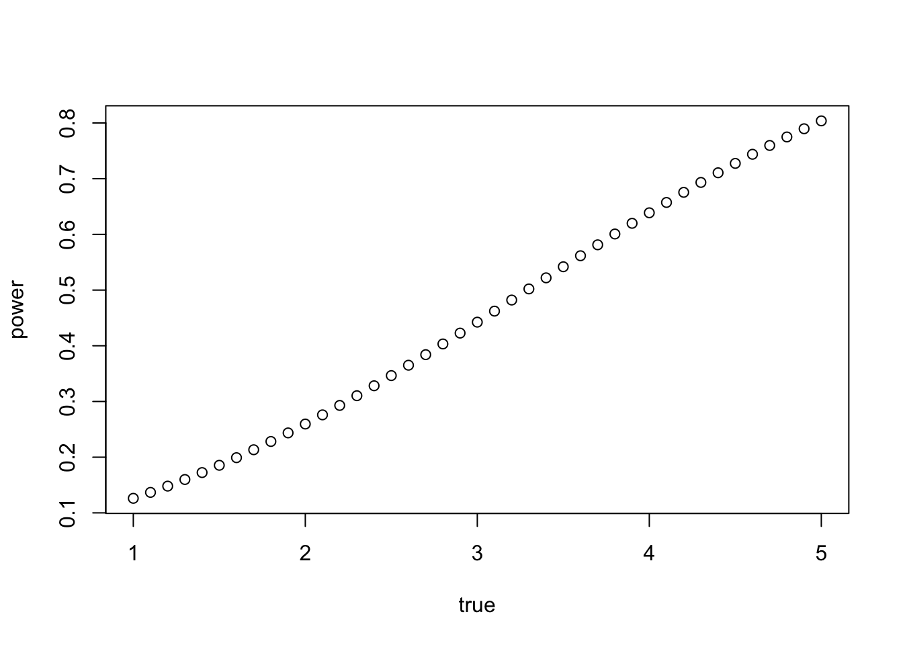
次回までに
事後学習
- 授業資料を見直し、目標到達をセルフチェック
- WebClass上でのR実習課題（日曜日まで）
事前学習
- 教科書（第5章冒頭および5.1-5.3: pp.169-192）を読む。
脚注
前回のRData形式とは違い、RDS拡張子になっている点に注意。↩︎
この場合の対立仮説は両側対立仮説というが、\(H_{1}:\beta_{1}>0\)（正の影響を与える）あるいは\(H_{1}:\beta_{1}<0\)（負の影響を与える）のように向きを定めると片側対立仮説になる。↩︎
\(n\)はサンプルサイズで\(k\)は変数の数である。変数の数は実際にモデルに投入している変数に定数項を加えたものであり、この二変量回帰の場合は\(k=2\)になる。↩︎
正規分布のうち期待値0、標準偏差1のものを特別にこのように呼ぶ。↩︎
信頼区間は非常に誤解が多い概念である。よくあるのが「真の値が24から416に分布している確率が95%」という解釈だが、これは間違いである。正確には、同じ方法で標本抽出と区間の計算を繰り返した場合、得られる区間の約95%が真の値を含むと解釈する。今回得られた区間は[24, 416]であり、この方法で計算された区間の一つである。↩︎